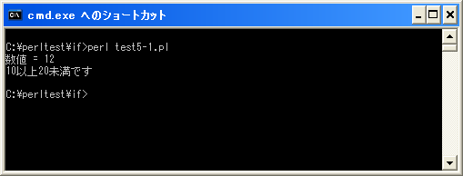

複数の条件分岐(if .. elsif .. else)
「if」文では単独の条件分岐だけではなく複数の条件分岐を使って処理を分けることが出来ます。これには「if .. elsif .. else」文を使用します。書式は次の通りです。
if (条件式1) {
条件式1が真の時に実行する処理;
}elsif (条件式2) {
条件式1が偽で条件式2が真の時に実行する処理;
}elsif (条件式3) {
条件式1及び条件式2が偽で条件式3が真の時に実行する処理;
}else{
全ての条件式が偽の時に実行する処理;
}
最初の条件式は今までの「if」文と同じです。条件式が真の場合には次に記述されたブロック内の処理を行いそしてif文を終了します。そして条件式が偽の場合だけ次の「elsif」へ進み、記述された条件式を評価します。評価した結果が真であればその次に記述されたブロック内の処理を行いif文を終了します、偽であった場合は次の「elsif」へ進みます。上から順に評価されていくことに注意して下さい。
「elsif」は必要な数だけ記述することが出来ます。また全ての条件式が偽だった場合に実行する処理として「else」の次のブロック内に処理を記述できます。「else」の部分は必要無ければ記述しなくても構いません。
例えば変数に格納された値が正の数か負の数か又は0かで処理を分ける場合には次のように記述します。
my $num;
$num = 5;
if ($num > 0){
print "正の数です";
}elsif ($num < 0){
print "負の数です";
}elsif ($num == 0){
print "0です";
}else{
print "その他の値です";
}
サンプルプログラム
では簡単なプログラムで確認して見ます。
use strict;
use warnings;
use utf8;
binmode STDIN, ':encoding(cp932)';
binmode STDOUT, ':encoding(cp932)';
binmode STDERR, ':encoding(cp932)';
my $num;
$num = 12;
print "数値 = $num¥n";
if ($num >= 20){
print "20以上です¥n";
}elsif ($num >= 10){
print "10以上20未満です¥n";
}else{
print "10以下です¥n";
}
上記を「test5-1.pl」の名前で保存します(文字コードはUTF-8です)。そしてコマンドプロンプトを起動し、プログラムを保存したディレクトリに移動してから次のように実行して下さい。

今回のサンプルでは数値を格納する変数「$num」の値に対して複数の条件式を順に評価してます。
( Written by Tatsuo Ikura )

著者 / TATSUO IKURA
初心者～中級者の方を対象としたプログラミング方法や開発環境の構築の解説を行うサイトの運営を行っています。